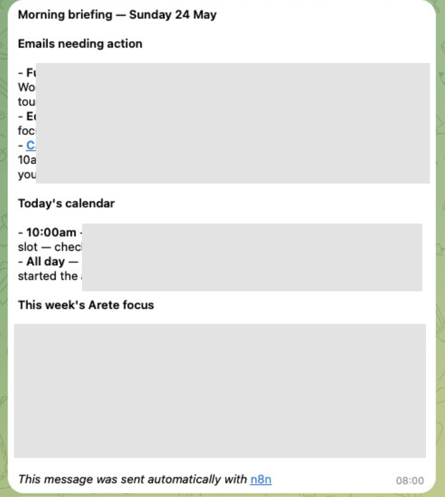
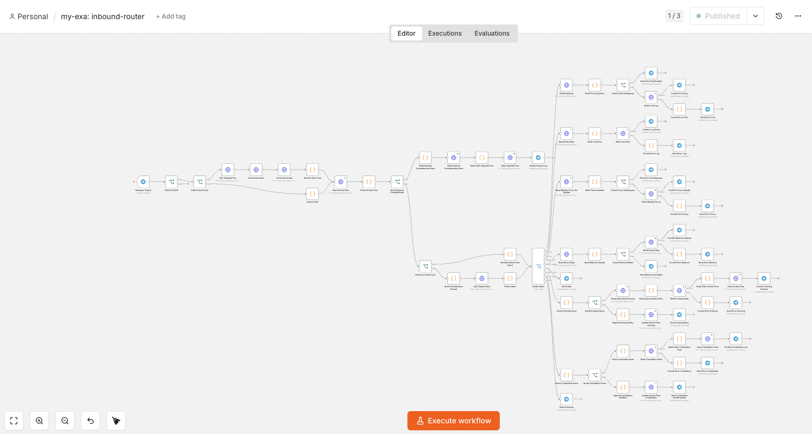
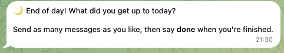
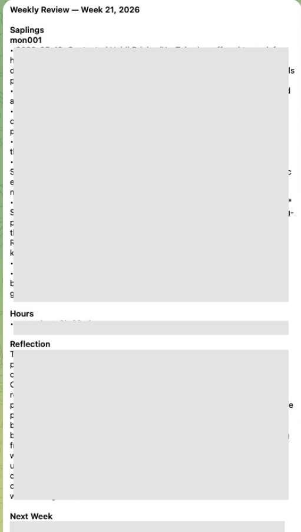
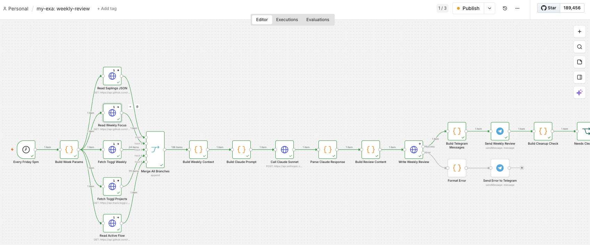
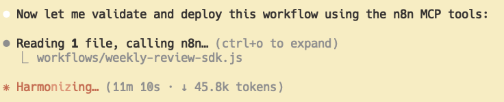

- Sunday 2026-05-24
What is it?
- A suite of automations I1 built over a weekend that does for me some of the things that an executive assistant would do:
- briefs me each morning
- captures things as they come up
- reconciles my day each evening
- It runs as a Telegram bot, connected to my Obsidian vault backend that I’ve been using for ~1 year. I can send it messages or voice notes! (So cool 😭)
Why I built it
Problem space 1: not using tools due to lack of pinging
- I’ve been vibe-coding apps for myself for the last ~3 months, and one of them is a tool called Arete that is supposed to help me remain clear on my currently committed projects and goals
- However, the failure mode I discovered is that I'd often forget to use it, and it’d feel aversive to use because of not using it for a while
- All of my tools so far have lacked the ability to ping me proactively
- So, this is where I thought I could take the systems I’ve already built, but add a Telegram front-end so that it can actually e.g. ping me in the morning, and I can easily add things to it throughout the day (e.g. “note: I just did [task]”) without having to semi-laboriously find the right Claude Code session in my terminal app, etc
Problem space 2: not setting daily & weekly goals
- Same as above really, not doing this due to lack of being pinged, but also due to not having a unified place to look at this stuff, and even if I did, would I remember to look at it?
- This is a key benefit of an ExA IMO - your plans and priorities exist in another person’s brain and they can poke you about them, reducing the amount that you have to manage yourself
What it does
Note that of course this is all very extensible, and it’s only 2 days old. I expect to keep tweaking things as I use it more
Also note that the below has been compiled by Claude - I’d rather leave it as-is than spend time rewriting to make it sound less LLM-y
Four automations running on a schedule plus an always-on inbound assistant.
1. Morning briefing (8am)
- Pulls my unread Gmail, today + tomorrow’s Google Calendar, and my weekly priorities
- Hands it all to Claude (Sonnet), which writes a single, direct briefing
- Lands in my phone before I start the day — no app to open

2. Inbound assistant (always on)
- I send a text or voice note; Whisper transcribes it, Claude (Haiku) works out what I meant, and it files it in the right place
- Handles: logging a note, marking progress on a goal, updating my weekly focus, updating my account balances
- Confirms back what it did, every time — so I trust it
- 👇 It’s uh, rather mad!

3. Evening check-in (9pm)
- Asks “what did you get up to today?”
- Keeps the conversation open (“anything else?”) until I say I’m done
- Writes the whole thing up as the day’s note

4. Daily completeness log (9:35pm)
- Reconciles what I actually did: reads my Toggl Track time entries and my GitHub commit activity across projects
- Claude (Sonnet) synthesises a “here’s what your day looked like” summary
- Asks “anything missing?”, I top it up, it files the final record
5. Weekly review (Friday, 5pm)
- Reads my week’s goal progress and my Toggl hours across projects
- Claude (Sonnet) writes a structured weekly review — what moved, where the time went, what’s next
- Sends the summary to my phone and files the full review
- Thing to add in the future: have this be conversational, so it tells me what I did and then asks me if there was anything else, and then guides me through a weekly review process
- Probably also will want to be able to say “can’t do this right now, ping me tomorrow at noon?”


How it’s built
- n8n — a visual workflow-automation platform — orchestrates everything
- Claude Code for actually building the n8n workflows
- Claude for the thinking: Haiku for routing inbound messages, Sonnet for writing briefings and summaries
- OpenAI Whisper for voice-note transcription
- Telegram as the interface — already on my phone, nothing new to learn
- Connected to my real tools — Gmail, Google Calendar, Toggl, and my notes (an Obsidian vault) — so it works with my actual data, not a generic feed
- Everything it writes is committed to GitHub, so every action is versioned, reversible, and auditable
How long did this take?
- It probably took around 4 hours of Claude Code time to have it plan and build all these workflows, and for me to assign credentials and help with debugging

- I used the BMAD suite for initial planning, which I love
Footnotes
-
With heavy help from Claude Code, of course — more like, I was the orchestrator and tester who provided the initial plans ↩